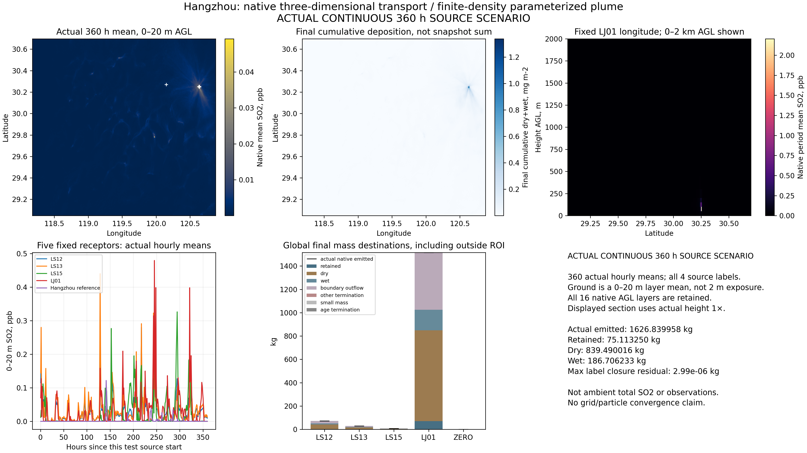

Three-dimensional passive transport
X is particle position(m), U is prescribed three-dimensional weather velocity(m/s), and u-prime is the correlated turbulent velocity. The gas does not change the ambient wind.
INDEPENDENT MODEL REVISION · SCIENTIFIC
The regional data contain360 actual consecutive hourly means on a541×331 geographic grid with 16 AGL diagnostic layers. Prescribed 3D weather uses 9/3 km grids and 50 mass levels. The particle scheme and finite-density plume parameterization follow the Vancouver model; this is not CFD/LES or a replay of the original custom solver.

| ID | Longitude | Latitude | SO2 kg/h | Outlet AGL m | Diameter m | Exit K |
|---|---|---|---|---|---|---|
| LS12 | 120.638100 | 30.248949 | 0.2 | 20 | 0.7 | 353.15 |
| LS13 | 120.637733 | 30.248203 | 0.083 | 50 | 0.6 | 313.15 |
| LS15 | 120.638448 | 30.253078 | 0.024 | 80 | 0.8 | 353.15 |
| LJ01 | 120.628715 | 30.250146 | 4.212 | 65 | 2 | 323.15 |
These documented EIA design parameters are conditional scenario inputs. Current commissioning, future operation and actual-versus-standard flow interpretation are not verified by real-time CEMS. Continuous operation is assumed; annual design operating hours are not a future calendar. Background and external chemical inflow are excluded, not declared physically zero.
The private native FLEXPART-WRF binary retains the already-qualified counting-precision repair, four-outlet geometry interface and all-four-label near-diagnostic binding. The original particle equations and mass guards remain unchanged. This is a disclosed private variant, not an unmodified official release.
Ground values average the 0–20 m layer; they are not 2 m measurements. Query data retain unit-converted native F32 values and all four species labels. The main renderer decodes log Q8 scalar assets before interpolation; colour and opacity never define scientific concentration. Hourly residence and regional outputs are different spatial estimators of the same source contribution and cannot be added together.
The original 00–15 prompt versions remain unchanged. This independent revision changes regional weather input, transport implementation, turbulent closure, thermal plume treatment, output bins and particle count together. It is not a one-variable convergence test. The new native scheme has dry/wet removal but no original custom oxidation or reversible R/I surface pool.
X is particle position(m), U is prescribed three-dimensional weather velocity(m/s), and u-prime is the correlated turbulent velocity. The gas does not change the ambient wind.
The native FLEXPART-WRF stochastic closure diagnoses its drift and diffusion from weather/stability/surface closure. This is not a resolved eddy simulation or a manually added random visual texture.
m is carrier mass flux(kg/s), P momentum flux(kg m/s2), H potential-temperature flux(kg K/s), and the dot differentiates plume travel age(s). This dry integral model parameterizes entrainment.
b is plume radius(m); exhaust density uses its own temperature, not ambient density. Rd=287.05J/(kg K), p0=100000Pa; the dry-air carrier approximation and conditional exhaust-volume interpretation remain limitations.
The0.10/0.60 coefficients are the fixed parallel/crossflow closure of the inherited model, not fitted to these images or observed Hangzhou plumes.
The carrier entrains ambient momentum and potential temperature; the density contrast drives buoyancy. No building wake or resolved heat feedback to the weather is supplied.
Ki denotes the native spatial weighting/deposition-to-grid estimator. The stored regional outputs are actual one-hour means, not instantaneous endpoints. Do not reconstruct a whole day by repeating one short run.
The actual native accepted segment is sampled with bounded midpoint quadrature into nonuniform bins. All four active labels contribute to every near box. Fine diagnostic bins do not create CFD resolution; overlapping near/region estimates must never be summed as mass.
The inherited native MIXINGRATIO string says by-mass but its gas writer numeric value is molar ppt. Unit-convertedF32 queries are kept separate from log Q8 display; do not infer ppb from smoke opacity.
Dry/wet output is cumulative since initialization. A15-day deposition total is the final cumulative snapshot; daily totals are endpoint differences, never a sum of cumulative snapshots.
The ledger is global to all transported particles, not restricted to the output map. The unchanged native tolerance per label is max(1e-7kg,1e-5times emitted mass). Original custom solver absolute1e-7kg and reversible/irreversible surface pools are a different model.
The preserved complete24h GPU-versus-fixed-nativeCPU comparison FAILED the unchanged2mm criterion (2.189254mm outer /3.292000mm inner); the later gamma and native-GF hybrid attempts also failed. This source run instead uses the original compiled nativeCPU weather model itself, original12MPI3x4 decomposition and genuine same-state restart lineage. Both-domain finite/positive-layer/CFL checks and original-threshold restart comparisons are separately recorded; small native restart roundoff is disclosed. No failed comparison was relabeledPASS and no4mm criterion was introduced. This is not observational rain accuracy or a15day error bound.
Actual released primary particles: 499920; maximum budget: 500000. Weather implementation: Original compiled NCAR WRFv4.7.1 CPU12MPI3x4 with the exact original matched-reference physical configuration; nativeFLEX CPU8 retains disclosed diagnostic counter/geometry repairs. GPU used for independent plume and saved-field work, not weather.. The original failed gates and the separately verified original-native restart lineage remain distinct artifacts.
Frozen weather initialization:13 November 2026 00UTC. Requested scientific source period:13 November 16 UTC through28 November 16 UTC. This page's actual data start:2026-11-13T16:00:00Z. All figures derive from actual native files and the global ledger, not rendered images. Scientific heights are 1×; historical detailed terrain/buildings in the3D page are display context and do not generate fine-grid airflow. Unknown building heights remain schematic.